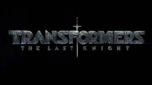
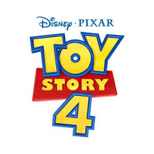

MY favorite movies
1 Deadpool
2 Spiderman
3 Transformer
4 Toystory
5 Venom
面白い、映画をあまり見ない自分でも楽しめたし海外の映画にはまるきかっけにもなった映画下ネタとかいろいろ混ざった感じでカオスだけどちゃんと物語があって途中でだれたりもしない。ほんとにおすすめの映画
子供のころに見ていて最近また見直してこんなに面白かったのかと思った映画。主人公はヒーローとして頑張りつつでも、人間としての葛藤などがあり見ていて飽きない

かっこいい、車からロボットに変形する場面はほんとに鳥肌もの、日本ではぜったいに再現できないようなCGでストーリーも面白い、

大人になってから見るとまた違った見方ができるいい映画、子供の時はただ物語を楽しんでいたが、大人になってからだと、あの頃にもどりたいななどすこし懐かしい気持ちになったりする
宇宙からきたなぞの生命体に寄生され、主人公と一緒に協力しながら悪者を倒すダークヒーロー的なストーリー。前半すこし退屈に感じたが後半からCGを使った戦闘シーンなどが増え徐々に引き込まれていった